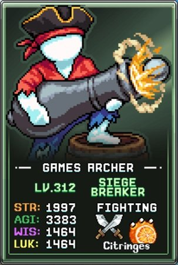
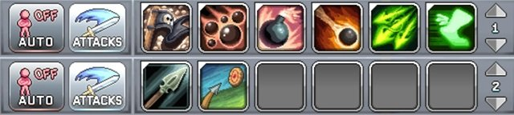
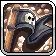
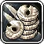
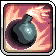
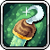
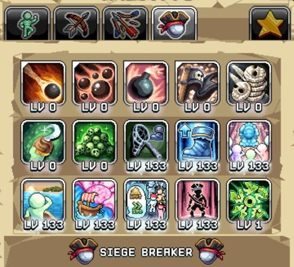
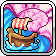
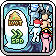

번역 안내. 클래스·스킬·탤런트 이름 등 고유명사는 인게임 검색을 위해 영어 그대로 두었고, 설명만 한글로 옮겼습니다.

전투(Damage) 빌드
이 전투 빌드는 같은 프리셋 내에서 두 가지 주요 역할을 수행합니다. 첫 번째는 표준 AFK 전투로, Siege Breaker는 이동 속도에 따라 데미지가 스케일링되어 Death Note 킬 수 쌓기나 포털 밀기에 이상적인 AFK 최강 캐릭터 중 하나입니다.

두 번째 역할은 Plunderous Mobs(약탈 몹)를 Active(직접 플레이)로 사냥하는 것입니다. 이 특수 몹은 계정 전반의 경험치와 드롭률에 영구적인 버프를 부여합니다. Pirate Flag 탤런트로 스폰되며 Plunder Ye Deceased로 더욱 강화됩니다. Siege Breaker는 World 5의 평평한 맵인 OJ Bay에서 최적의 성능을 발휘합니다.
추천 탤런트 우선순위:
| 탤런트 | 효과 | 설명 |
|---|---|---|
 Pirate Flag |
처치 시 높은 HP와 +% 경험치·드롭 보상을 가진 Plunderous Mobs 스폰 가능 | 기본 스폰 확률 2%에 40킬 무안타 메커니즘이 있는 Plunderous 몹 스폰을 활성화합니다. 초반에는 1포인트만 투자하세요. |
 Plunder Ye Deceased |
Plunderous Mobs를 처치하면 코인 드롭이 활성화되어 몹을 리스폰시키고 자동 루팅 | Active 전투에서 Pirate Flag와 함께 작동합니다. 추가 포인트마다 지속 시간이 늘어나므로 맥스하는 것을 권장합니다. |
 Suppressing Fire Suppressing Fire |
미니 포탄 여러 발을 퍼뜨려 데미지 | 쿨타임이 짧은 최고의 Active 공격 탤런트 중 하나입니다. 1포인트 투자 후 다른 공격 탤런트보다 이 탤런트를 먼저 업그레이드하는 것을 권장합니다. |
 Fire Bomb |
여러 개의 폭탄을 주변에 던져 여러 적에게 폭발 데미지 | 데미지가 높지만 쿨타임이 긴 공격 탤런트입니다. 다른 탤런트를 모두 맥스하기 전까지는 1포인트로 충분합니다. |
| Cannonball | 앞으로 큰 포탄을 발사해 데미지 후 폭발 | 쿨타임이 짧고 범위 폭발이 있는 탤런트입니다. 높은 데미지 덕분에 1포인트로도 충분합니다. |
 Symbols Of Beyond ~G Symbols Of Beyond ~G |
최소 1포인트 이상 투자된 모든 탤런트 레벨 + (20레벨마다 +1) | 1포인트 투자만으로 다른 모든 탤런트에 보너스 레벨을 부여하는 매우 효율적인 탤런트입니다. |
 Archlord of the Pirates Archlord of the Pirates |
Plunderous Mobs 10의 거듭제곱 킬마다 +% 경험치 및 드롭률. 모든 캐릭터 적용 | Plunderous Mobs를 파밍하는 주요 이유입니다. 10,000킬에서 4배 보너스가 나오며, 장기 목표는 10만~100만 킬입니다. |
 Adaptation Revelation Adaptation Revelation |
+% AGI 및 Quickness Boots 최대 탤런트 레벨 + | 풍부한 탭 1 탤런트 포인트를 활용하는 추가 민첩(AGI) 원천입니다. |
 Stacked Skulls Stacked Skulls |
AGI 1,000당 킬당 추가 킬 +% | 포털과 World 3 Death Note의 기록 킬 수를 소폭 향상시킵니다. |
 Crew Rowing Strength |
항해(Sailing) 10레벨마다 무기 파워 + | 후반 진행 단계에서 효과가 점점 줄어들기 때문에 전투 빌드에서 가장 낮은 우선순위입니다. |
항해(Sailing) 빌드

항해 빌드는 World 5 진행을 위한 항해 전리품과 경험치 수익을 향상시킵니다. 이 프리셋은 Bowman 낚시 프리셋과 함께 사용하며, 항해 수익을 회수하기 전에 이 프리셋으로 교체하세요.
추천 탤런트 우선순위:
| 탤런트 | 효과 | 설명 |
|---|---|---|
| Unending Loot Search | 항해 전리품 더미가 거의 가득 찼을 때 배들이 이전 상자를 업그레이드 가능. 또한 +% 상자 전리품 | 전부 투자하거나 전혀 투자하지 않는 복잡한 탤런트입니다. 항해를 World 4 브리딩과 유사한 업그레이드 메커니즘으로 전환합니다. 자주 확인하지 않거나 배가 적을 때 초반에 더 유용합니다. 배가 여러 척이고 자주 트리거되는 후반 진행에서는 건너뛰세요. |
 Expertly Sailed |
+% 항해 경험치 획득 | 일일 선장 인벤토리와 강력한 선장을 해금하는 데 중요합니다. Crew Rowing Strength를 강화하고 Fauxory Tusk를 통해 유물(Artifact) 발견 확률도 올립니다. |
 Captain Peptalk |
항해 선장에게 +% 경험치 제공 | 선장의 숙련도를 향상시켜 배 속도, 전리품 가치, 구름 발견, 유물 발견 확률, 희귀 상자 확률에 모두 영향을 줍니다. |
| Symbols Of Beyond ~G |
최소 1포인트 이상 투자된 모든 탤런트 레벨 + (20레벨마다 +1) | 1포인트만으로 효과가 크며, 맥스하면 모든 핵심 스킬링 탤런트에 소폭 추가 부스트를 줍니다. |
 The Family Guy The Family Guy |
표시된 가족 보너스보다 +% 더 큰 가족 보너스 | Siege Breaker의 가족 보너스는 항해 시간을 단축하지만, 전반적인 부스트는 비교적 작습니다. |
 Skill Ambidexterity Skill Ambidexterity |
AGI가 스킬 효율에 미치는 영향 +% 증가. 또한 AGI + | 민첩은 항해 수익에는 영향을 주지 않지만 잡기(Catching) 스킬 수익에 기여합니다. |
| Adaptation Revelation |
+% AGI 및 Quickness Boots 최대 탤런트 레벨 + | 잡기 스킬 수익을 위한 추가 민첩을 제공합니다. |
| Archlord of the Pirates |
Plunderous Mobs 10의 거듭제곱 킬마다 +% 경험치 및 드롭률. 모든 캐릭터 적용 | 이미 Plunderous 몹을 충분히 확보한 상태에서 항해/잡기 프리셋에 오래 머물 계획이라면 고려할 수 있습니다. |